Funwork 1
Evan Greene 2020-01-30
Contents
Derivation of the equations of motion
The equations modeling the motion of a double inverted pendulum on a cart can be derived from the Lagrangian equations of motion. The equations of motion are given by
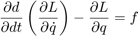
Where 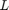 is the Lagrangian fucntion 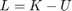, the difference between kinetic and potential energy, 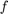 is the non-conservative force acting on the system, and 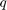 is the generalized coordinate used to describe the system.
For the case of the double-inverted pendulum, the state of the system is described by three generalized coordinates, 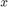, 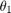, and 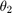. Therefore, there are three equations of motion.
To find find the equations of motion, we must first find the kinetic and potential energy of the system. The kinetic energy 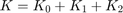, where 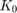 is the kinetic energy of the cart and pendulum, 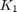 is the kinetic energy of mass 1, and 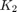 is the kinetic energy of mass 2. The value of is
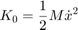
While the value of is
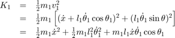
and the value of 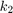 is
![$$
\begin{array}{rcl}
K_2 & = & \frac{1}{2}m_2 v_2^2 \\
& = & \frac{1}{2} m_2 \left[ (\dot x + l_1 \dot \theta_1 \cos \theta_1 +
l_2 \dot{\theta}_2 \cos \theta_2)^2
+ (-l_1 \dot \theta_1 \sin \theta_1 -
l_2 \dot{\theta}_2 \sin \theta_2)^2 \right] \\
& = & \frac{1}{2} m_2 \dot x^2 + \frac{1}{2} l_1^2 \dot \theta_1^2 +
\frac{1}{2} m_2 l_2^2 \dot \theta_2^2 +
m_2 l_1 \dot x \dot \theta_1 \cos \theta_1 +
m_2 l_2 \dot x \dot \theta_2 \cos \theta_2 \\ & & \quad + \,
m_2 l_1 l_2 \dot \theta_1 \dot \theta_2 \cos (\theta_2 - \theta_1)
\end{array}
$$](fw1_eq07782592241914267246.png)
Meanwhile, the only form of potential energy present in the system is gravitational potential energy, which is associated with the height of each of the masses.
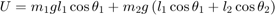
The Lagrangian function is therefore
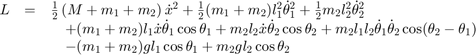
We can now find the equations of motion from the Lagrangian. The first equation is
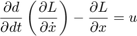
We evaluate this function by finding
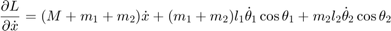
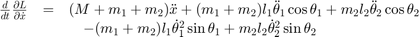
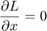
Therefore, the first equation of motion is
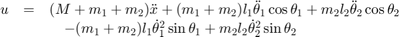
We can find the second equation of motion by finding
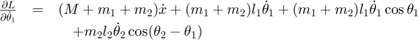
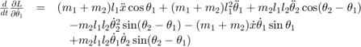
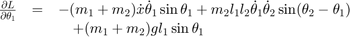
The second equation of motion is therefore
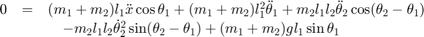
We can find the third equation of motion from
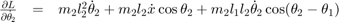
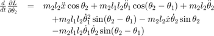
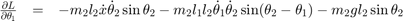
The third equaton of motion is therefore
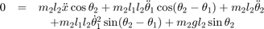
Derivation of the state-space model
We can rearrange these equations into the form
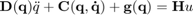
where
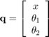
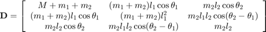
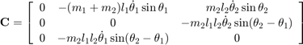
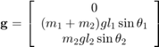
and
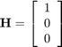
We can transform this model into the state-space format by creating the state vector
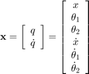
From our above equations, we can see that
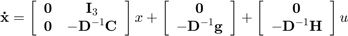
or, in MATLAB syntax